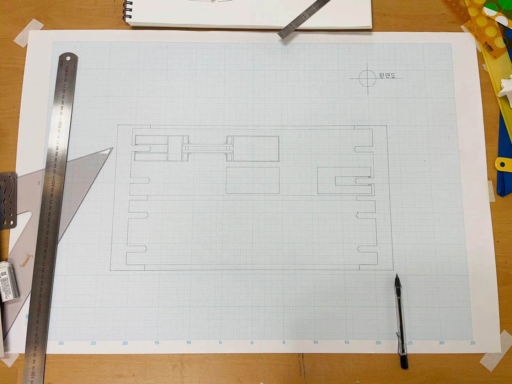

DRAWING FOUNDATIONS
선에서 공간으로
선긋기와 글자, 창호와 재료, 평면과 입면. 공간을 정확하게 표현하기 위한 기초 언어를 익혔습니다.
- YEAR / SEMESTER
- 1학년 1학기 · 2021
- PROJECT TYPE
- 기초 제도 · 드로잉
- CONTRIBUTION
- 개인 실습 · 팀 발표 포함
- SITE / SUBJECT
- 조선대학교 건축학과

THE IDEA
생각의 출발점
건축을 이해하는 첫 과정은 관찰한 것을 손으로 옮기는 일이었습니다. 선의 반복과 재료 표현, 프리핸드 드로잉을 통해 도면의 기본 규칙을 익히고, 창문을 평면과 입면으로 읽는 연습을 했습니다.
- 01
기초 표현
선긋기·글자 연습과 창호·재료 작도로 도면 표현의 기초를 다졌습니다.
- 02
관찰과 작도
창문을 관찰해 프리핸드 드로잉과 평면·입면으로 표현했습니다.
- 03
함께 읽는 건축
조선대학교 표현하기와 건축가의 표현법 조사를 팀 발표로 진행했습니다.
PROCESS & OUTCOME
과정과 결과
사진을 누르면 크게 볼 수 있습니다.